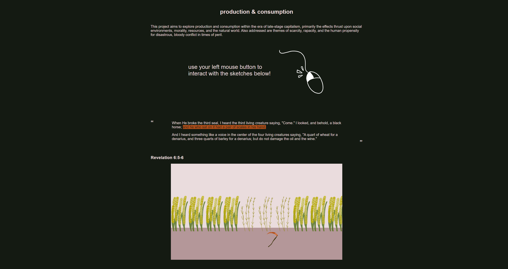
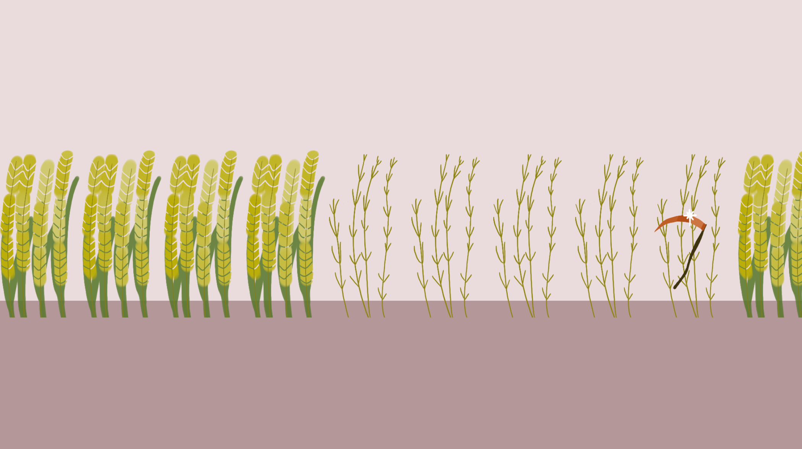
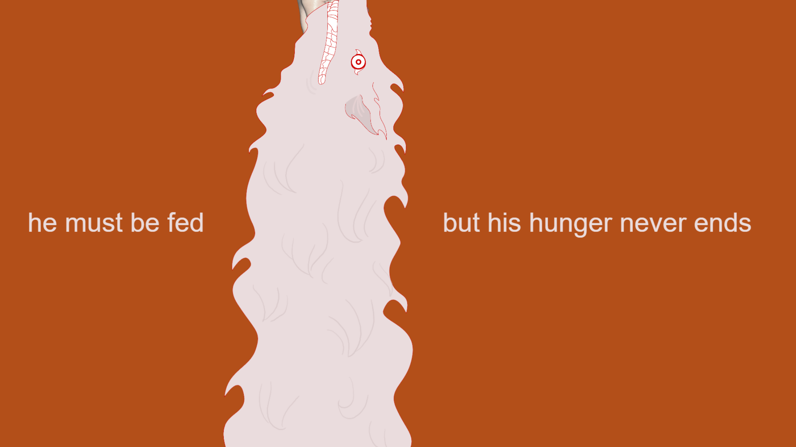

MAJ JENKINS.
PRODUCTION AND CONSUMPTION
This project aims to explore production and consumption within the era of late-stage capitalism, primarily the effects thrust upon social environments, morality, resources, and the natural world.
The project utilizes literary components for inspiration to illustrate themes of scarcity, rapacity, and the human propensity for disastrous, bloody conflict in times of peril.
These three interactive pieces were created in p5.js by Lauren McCarthy and p5.play beta initiated by Paolo Pedercini (@molleindustria).
VIEW HERE: http://xarts.usfca.edu/~mrjenkins/art315/project2
  